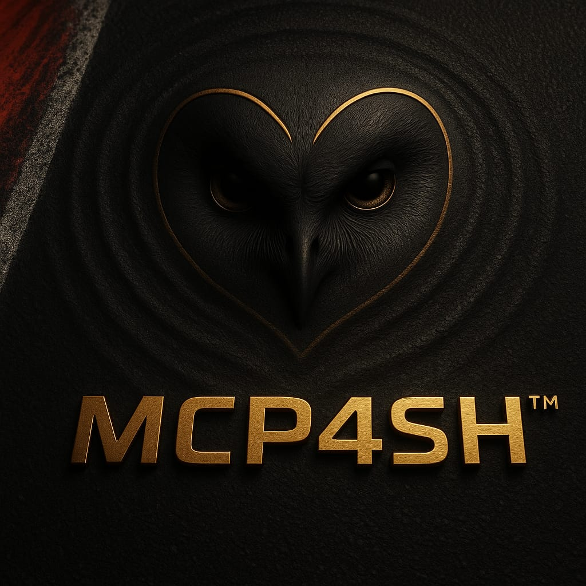

MCP4H PROTOCOL
The Multimodal Communications Protocol for Humanity. A standardized schema for low-latency sensory data, ensuring that haptic feedback remains coherent and prioritized across any hardware environment.
Founded by Dirk Van Echelpoel, Tyto Sensory Labs focuses on the intersection of biological precision and digital telemetry. We build the bridges that allow humans to "feel" machines.
The Multimodal Communications Protocol for Humanity. A standardized schema for low-latency sensory data, ensuring that haptic feedback remains coherent and prioritized across any hardware environment.

The flagship implementation for SimHub. MCP4SH translates complex racing physics into a layered haptic codec, preventing "signal smear" and providing drivers with intuitive traction and load cues.